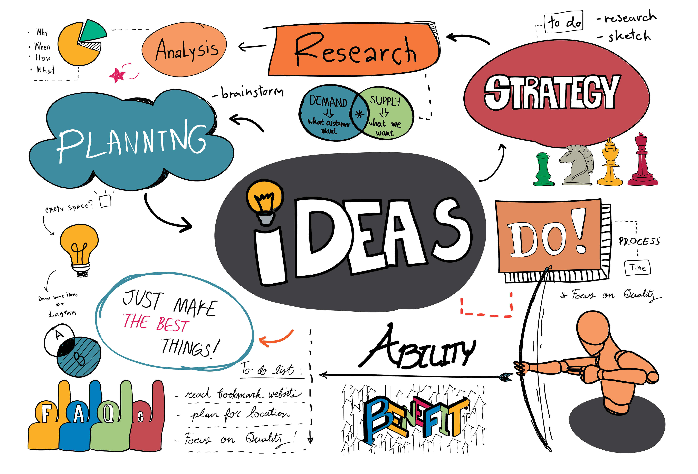

痴：痴迷。
虽然专注是创业者必备的优良品质，但我建议要区分痴迷与专注。开门见山地说，我不看好把个人痴迷当作市场需求的创业动机。
李嘉诚曾说，不要和业务谈恋爱。也即是说，创业者可以爱上如何打磨自己的创业方法论，至于当前做什么业务，主要取决于市场需求。假若市场需求发生了巨大变化，迅速转手旧有业务，切入新的赛道，只要方法论是高效的，依然可以很快取得成绩。
但是在过往的经历中，我也耳濡目染很多用个人痴迷程度替代市场调查的失败案例。为什么说这样做很危险呢，你想想自己最痴迷的东西，会不会很容易认为许多人都会喜欢，甚至无法理解其他人为什么不会动心？所以，当我们仅仅从痴迷的角度去看待一件事物的时候，往往容易夸大其市场需求，给自己太多浪漫的错误信号，从而认定这是一条必然一帆风顺的赛道。
或许有的朋友会问，做自己不喜欢的东西，怎么能扛得住创业道路上的各种艰辛与风险呢？如前所述，创业者真正应该爱上的，是自己的创业方法论。如果把自己的创业基本功打磨扎实，有一天会突然意识到，自己的团队具体做什么业务似乎已经不那么重要了，无非是顺应市场、赚取属于自己的那份酬劳。然而看着自己的创业方法论攻下一个又一个迥异的山头，这份成就感更加安全可靠。
话说回来，即使自己喜欢的正好也是市场需求很大的，谁又能保证这块市场永远繁荣呢。